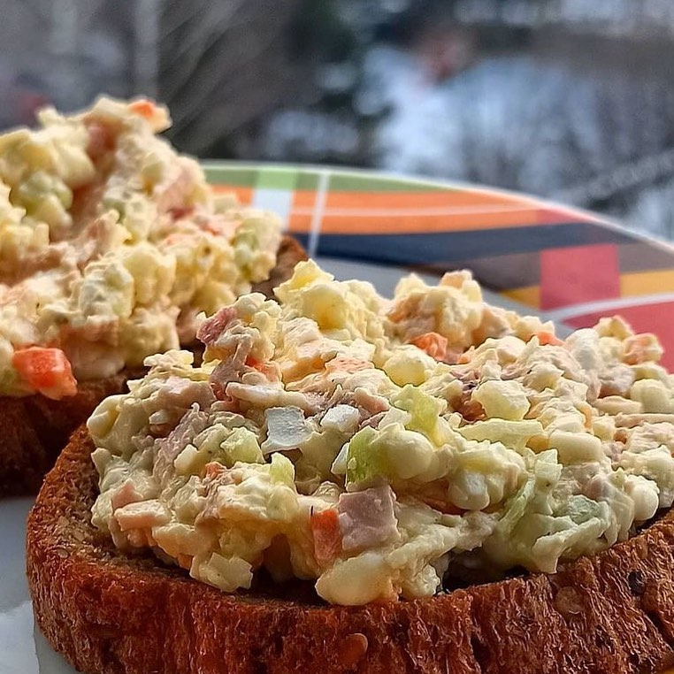

Mrkvový šalát podľa @varimketo — Normy Jedál
SVĚŽÍ POMAZÁNKA
@vanille_life
🔸1 menší kedlubnu
🔸3 menší mrkve
🔸1 ks jarní cibulky
🔸1 vanička cottage sýru
🔸2 vejce na tvrdo
🔸1 PL majonézy
🔸8 dkg šunky
🔸10 dkg goudy
🔸citrónová šťáva
🔸sůl, pepř
Vše pokrájíme na malé kostičky a promícháme.
#salat #nizkosacharidovepecivo #vecernichlebik #lowcarbsalat #kedlubnovysalat #mrkvovysalat #kedlubna #mrkev #lowcarbpecivo #lowcarbstrava #lowcarbstyl #jedulowcarb #milujulowcarb #domacipecivo #ketostrava #nizkosacharidoverecepty #zdraverecepty #lowcarbinspirace #lowcarbrecepty #nizkosacharidovastrava #recepty #bezcukru #bezmouky #cukrfree #cukrfreerecepty
💌KETO stravování
📌Tipy📌Triky
@varimketo_s_helen